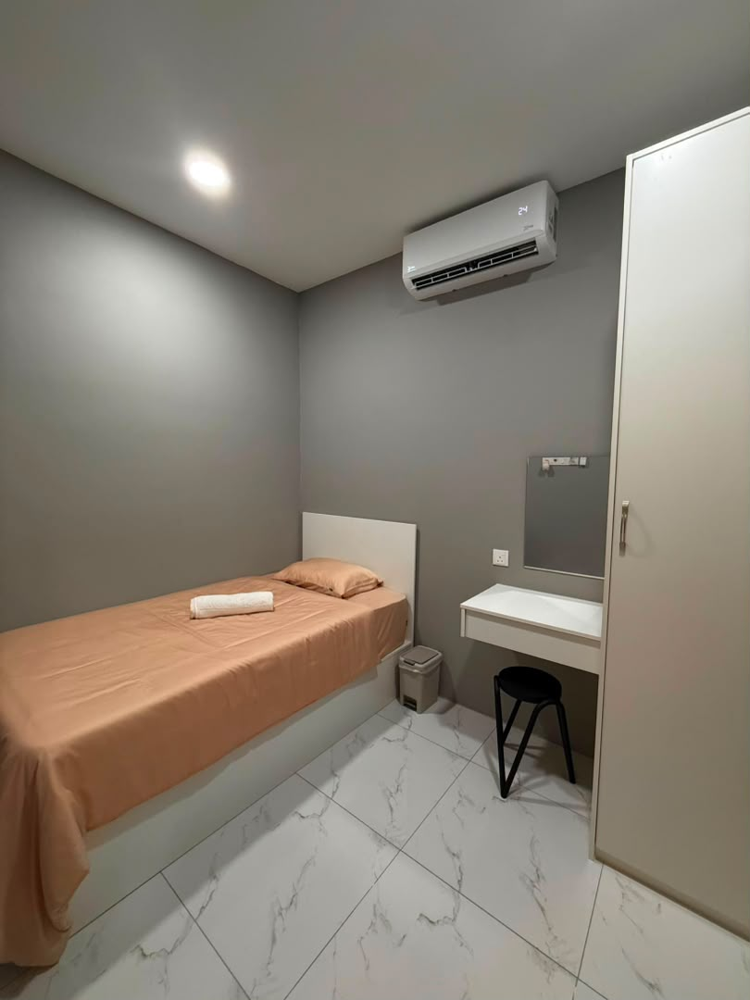
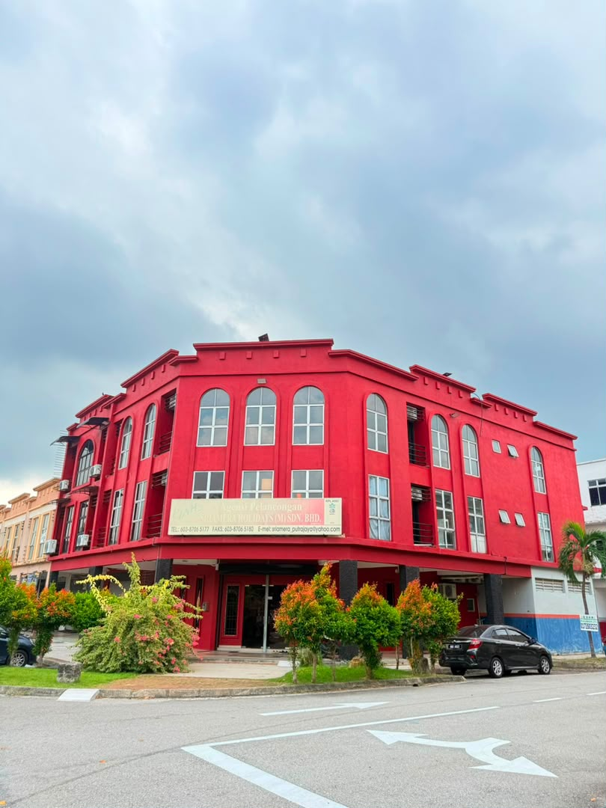
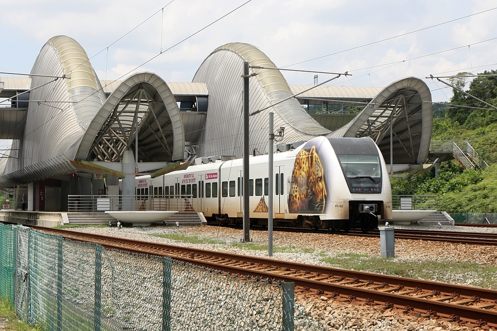
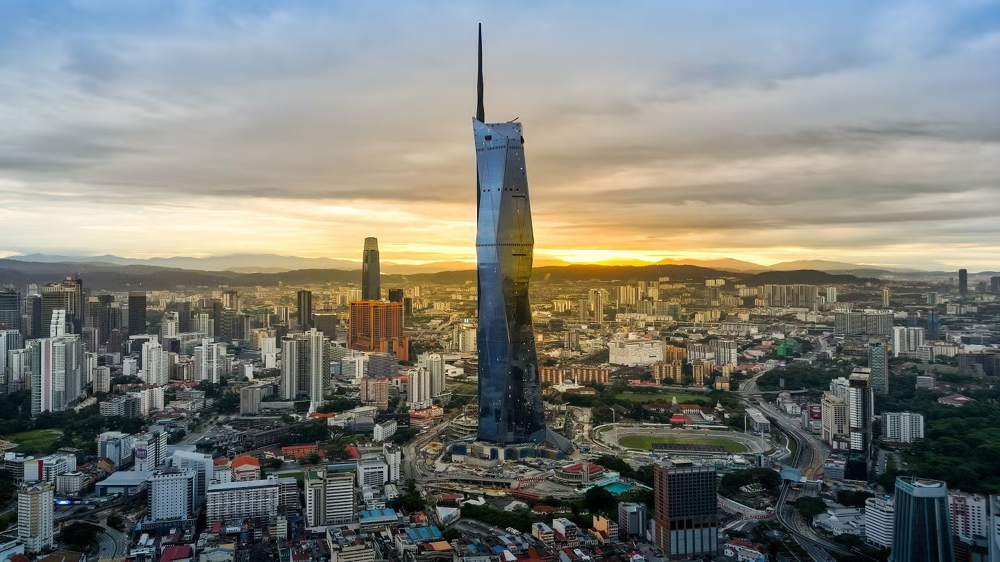
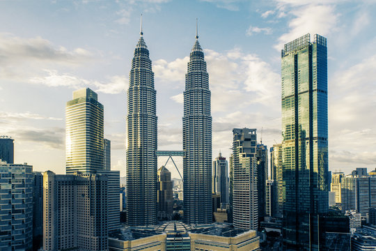
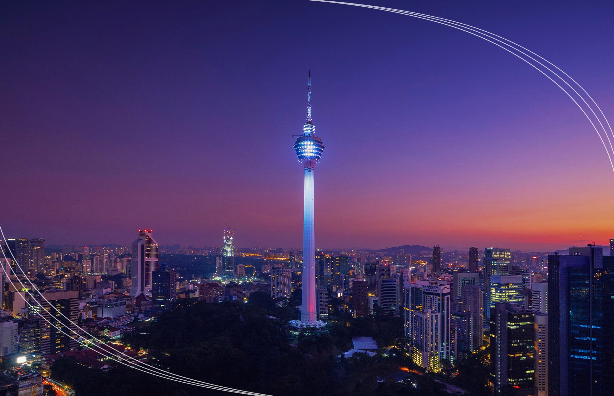
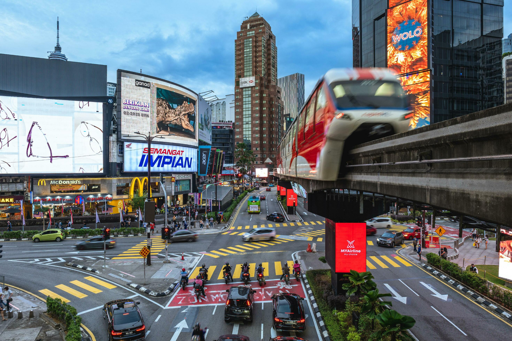

PUTRAJAYA · PRECINCT 1
Putra Mosque
Discover the famous pink-domed mosque beside Putrajaya Lake. Visitors should dress modestly and check visitor access around prayer times.
Plan your route ↗KOTA WARISAN · SEPANG · MALAYSIA
A comfortable place to rest, recharge and feel at home.
Explore Our Room
WELCOME TO B&B BY JUMSTAY
Thoughtfully prepared accommodation in Kota Warisan, Sepang, for guests looking for a comfortable and convenient stay in Malaysia.
OUR ROOM



.jpeg)
.jpeg)
.jpeg)
.jpeg)
GUEST REVIEWS
Booking.com · Elina · Russia · 9.0/10
“The hosts are extremely helpful, friendly and welcoming. The place is new, very clean, very beautiful and pleasant. Tea/coffee/water in the kitchen, breakfast in the morning.”
Reviewed September 28, 2026
Google · Waqas Munir · 5/5
“The property has a peaceful and welcoming atmosphere, and the location is very convenient, especially for travelers using KLIA.”
Google review · Rooms 5/5 · Service 5/5 · Location 5/5
Google · ro lend ten · 5/5
“It’s affordable, comfortable, and clean.”
Google review
FIND US
A convenient base for your next stay in Selangor, Malaysia.
Open Google Maps
DISCOVER THE BEST OF MALAYSIA
Your little guide to iconic architecture, peaceful lakeside views and easy ways to explore from B&B By JumStay.

NEARBY TRANSPORT · SALAK TINGGI
Salak Tinggi ERL station is approximately a 10-minute walk from B&B By JumStay. It is a convenient starting point for trips to KLIA, Putrajaya & Cyberjaya, and Kuala Lumpur. Please check the walking route and train timetable before setting off.
Plan your route ↗Check KLIA Transit timetable ↗For Putrajaya, take KLIA Transit from Salak Tinggi to Putrajaya & Cyberjaya, then continue by connecting bus or Grab. For Kuala Lumpur, take KLIA Transit towards Bandar Tasik Selatan or KL Sentral and continue by the relevant MRT, LRT or Monorail. Grab or taxi is the simpler door-to-door alternative. Journey times depend on connections and traffic.
PUTRAJAYA · PRECINCT 1
Discover the famous pink-domed mosque beside Putrajaya Lake. Visitors should dress modestly and check visitor access around prayer times.
Plan your route ↗
PUTRAJAYA · PRECINCT 3
Visit Masjid Tuanku Mizan Zainal Abidin, known for its striking steel-and-glass architecture and open, airy design.
Plan your route ↗
PUTRAJAYA · PRECINCT 1
Admire the iconic green dome and grand architecture from the public viewing areas. Access inside government offices is not assumed.
Plan your route ↗
KLIA · AIRPORT STOP
A tropical green escape inside the airport. Check current access and terminal arrangements before making a special trip.
Plan your route ↗
KUALA LUMPUR · MERDEKA PRECINCT
See Kuala Lumpur’s striking skyline landmark and explore the surrounding Merdeka heritage precinct. Check official visitor access before planning a tower visit.
Plan your route ↗
KUALA LUMPUR · KLCC
Visit Malaysia’s iconic twin towers, Suria KLCC and the landscaped KLCC Park. Book official tower tickets in advance if you want to go up.
Plan your route ↗
KUALA LUMPUR · BUKIT NANAS
Take in panoramic city views from one of Kuala Lumpur’s best-known landmarks. Check ticket availability and weather before visiting the observation areas.
Plan your route ↗
KUALA LUMPUR · CITY CENTRE
Explore shopping, cafés, street food and the lively city atmosphere around Jalan Alor and the main shopping streets.
Plan your route ↗MADE FOR YOUR STAY
Best by Grab or taxi if you want to visit all three with fewer transfers.
Open itinerary in Maps ↗Only suitable when you have enough spare time before departure.
Directions to KLIA ↗Best as a full-day trip. Choose two or three major stops if you prefer a relaxed pace. Tower access and ticketed attractions should be checked in advance.
Plan your route ↗Travel times depend on traffic, train schedules and connections. Check attraction access and opening hours before visiting.
BOOK YOUR STAY